DECK sankettambare.in/training · built with Claude Code
How a page of Strava activities became a story you can walk: one day, eleven prompts, nine commits, a Strava API that went behind a paywall, a bulk export instead, and ten stick figures who walk every activity's terrain.
We'll walk the day it was built. Arrow keys, or swipe.
This is the story of one page, sankettambare dot in slash training, and how it was built in a single day with Claude Code. It began as a plan to pull everything from the Strava API. That plan hit a paywall within the hour. What shipped instead reads Strava's own bulk export, and turns three hundred and fifty-eight activities into a story: a night map of light, a spiral of days, and ten stick figures who walk the terrain of any day you pick. We'll follow those ten through the whole build, one staying behind at every turn that mattered.
02 The day at a glance 3 Nov 2026 · IST
Every pin is a prompt you typed; every square is a commit Claude pushed. Click a pin to read it.
Pick a pin.
Seven hours, start to finish. The quiet gap is me thinking.
Here's the whole day on one line. The pins are the eleven prompts, starting at five forty-eight in the morning and ending at six minutes past one, with this deck. The squares are the nine commits, about twelve thousand lines in all. Notice the rhythm: a prompt, a burst of work, a commit, then a pause where you looked at what came back and decided what it needed next. That pause is where most of the good ideas came from.
03 The idea 05:48
/videos page synced from YouTube, one Supabase table, an admin sync button."Ask questions" turned out to be the most important two words.
The first prompt arrived at five forty-eight. Import all the activity data from the Strava API, into its own table, with a dedicated page. No photos, everything else. And crucially: research the API first, and ask questions before building. That instruction shaped the whole day. The site already had a template for this kind of thing, the videos page synced from YouTube, so the real work was deciding what "all the data" meant.
04 Research 05:48 – 05:53
The activity list: distance, time, climb, heart rate. One call per 200.
Splits, laps, best efforts, segment efforts, gear, device. One call each.
Every second: HR, cadence, altitude, GPS. One more call each.
1,000 calls a day (100 per 15 min). A deep backfill of ~1,000 activities is two days of syncing. And Strava's Nov 2024 API terms bar using its data to train AI models, which made indexing it into /ask the riskiest choice.
/training: list, year heatmap, stats & PRs, route map.Each question came with a recommended answer and the cost of each option.
Research found three depths of data. The summary list, the detail of each activity, and the per-second streams. Each level costs API calls, and Strava allows a thousand a day, so a deep backfill takes two days. Then came five questions, each with a recommended option and the trade-off spelled out. You chose summary plus detail, store everything but show only public activities, a sync button plus a nightly job, and every connection into the rest of the site.
05 Version one 06:16 · 3842c04 · 57 files · +3,886
0038_training.sql. Raw GPS and the private note sit in an owner-only table, not a hidden column.0038 on production through the SQL editor.It worked. It just wasn't going to stay free.
The first version landed at sixteen past six. Fifty-seven files: five tables with row-level security, an OAuth script with token rotation, an owner-only sync endpoint that watches Strava's rate-limit headers, the page with its list, heatmap, records and routes, and every integration you'd asked for. The site's own rules came along too: every new route needs a share card, meta tags and an SEO entry, so those landed in the same commit. You applied the schema on production straight away.
06 The pivot 06:25 · 777f333 · +1,289 / −1,384
Kudos, comments, segment efforts, workout type, Strava's own PR ranks, and live sync.
Every original .fit file: per-second heart rate, cadence, power, stride, altitude. More than the API's detail level ever gave, with no rate limit.
Four more questions, four recommended answers: visibility from the CSV column (else show all), parse the GPS files, remove the API code, keep the zip in a gitignored folder. The OAuth script, the sync endpoint, the admin page and the nightly step were deleted in the same commit.
One of us sat down here. The API code didn't come with us.
Thirty-seven minutes in, the real constraint showed up: Strava's API had gone behind a paid subscription. Could the bulk export do the job instead? It could, and in one way it did it better. The export loses kudos, segment efforts and live sync, but it carries every original FIT file from the watch, with per-second heart rate, cadence and power that the API's detail level never returned. The pivot was a clean one: the API code was deleted rather than left switched off, so nothing half-used stayed behind.
07 The import 0039 · 0040 · scripts/strava-import.mjs
tmp/strava-export/. Nothing raw is committed.fit-file-parser for .fit.gz; GPX and TCX by regex. No CSV? The FIT session becomes the summary.findDuplicates: same sport, starts within 60 s.name, so a generated "Morning Run" never overwrites a real title.profile; per-second facts to extra._stats.# the whole import, re-runnable npm run strava:import -- --dir=tmp/strava-export # 358 activities · 355 .fit · 3 .gpx # first run: 358 new # every run after: 0 new, 358 updated
Why "re-sent without name" matters. supabase-js builds its column list from the batch, so a key that's absent is left alone in Postgres. One rule makes re-imports safe without a read-before-write.
Run it twice, get the same table. That was your one rule.
The import is six stages. Unzip into a temporary folder that git ignores, so raw data never reaches the repository. Parse the FIT files, and the few GPX ones. Compute what the export doesn't contain: splits, laps, best efforts and personal-record ranks, all from the GPS track. Then the duplicates rule you asked for: upsert on Strava's id, and also skip any other file that starts within sixty seconds in the same sport. Existing rows are re-sent without their name, so a generated "Morning Run" never replaces a title you wrote. Run it ten times and you get the same three hundred and fifty-eight rows.
08 Privacy
strava_activity_private, readable only by the owner (RLS), never a hidden column on the public row.route_polyline, trimmed 400 m at each end.profile (the per-second streams for the day story) is stored without a single position.Privacy is decided by which table it's in, not which column is shown.
The export carries a risk the API hid: raw GPS without Strava's privacy zones, so every activity begins at a front door. The rule here is privacy by table, not by column. Raw tracks, start and end points, the private note and body weight live in a table only the owner can read. The public row gets a route with four hundred metres trimmed off each end, and the per-second profile that powers the stick figures stores no positions at all.
09 Design 06:49 · 0de7770 · 39 files · +3,556
A seeded demo log (trainingDemo.js, ids from DEMO_ID_BASE) let the design run ahead of the import. It's shown while the table is empty or with ?demo=1, always labelled "Sample data", and it vanished by itself when real rows arrived.
useViewMode() picks the site's atlas or classic shell; both read useTrainingData() and the same URL filters.
Run, walk, hike, ride, swim as --tr-* tokens with separate dark steps, run through the dataviz palette validator. Text never wears them.
Dummy data meant design didn't wait for the zip.
At ten to seven came the design brief, twice, in capitals. Redesign completely, animate it in atlas mode, enrich the classic layout, and make it the kind of page people stay on. The key move was building on sample data: a seeded, realistic log, clearly labelled, so the design could go ahead before a single real activity had been imported. It disappears on its own once the table has rows. Both layouts read the same data hook and the same filters, and the sport colours were validated as a set before any chart used them.
10 Atlas mode · the story
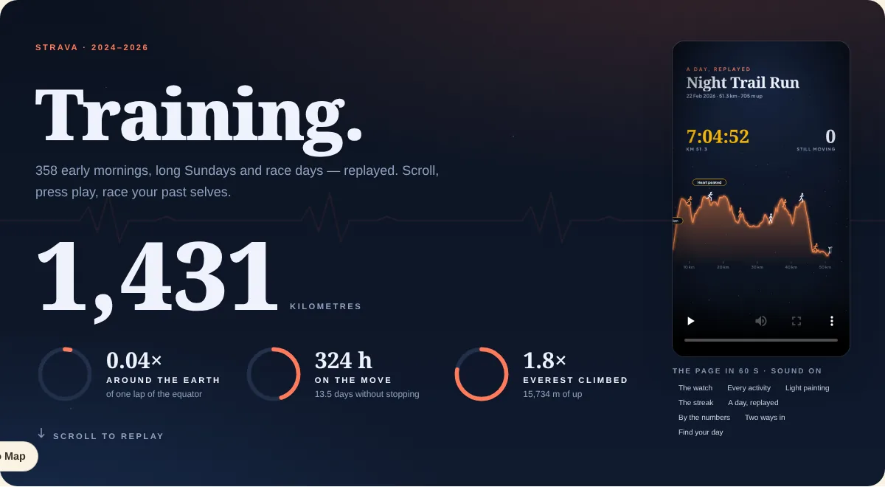
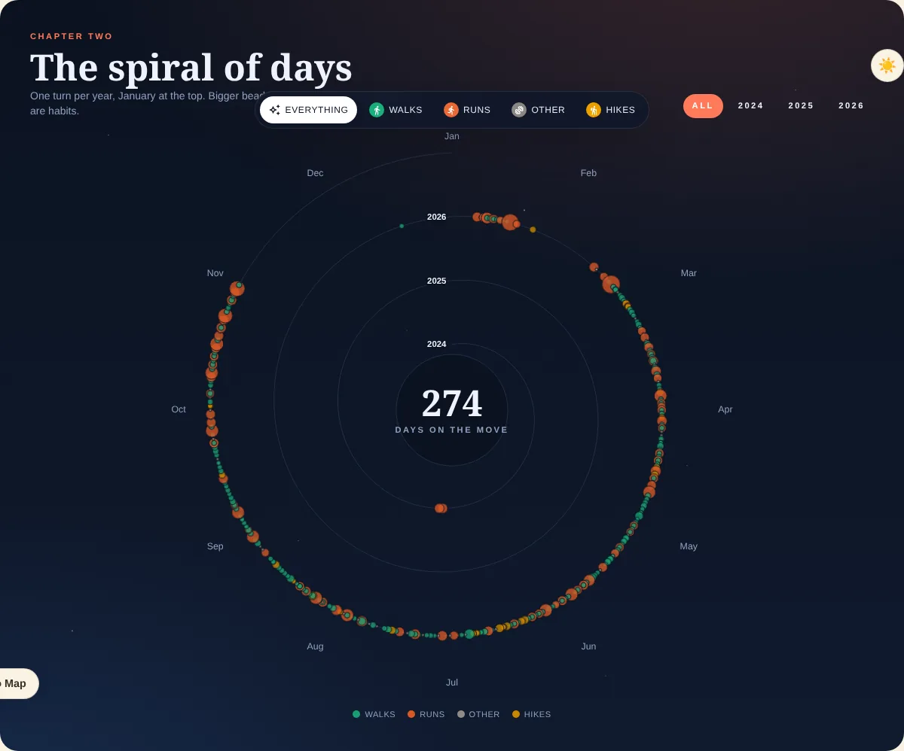
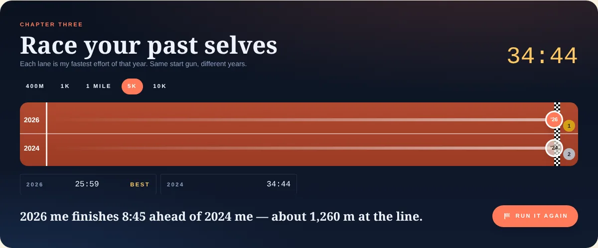
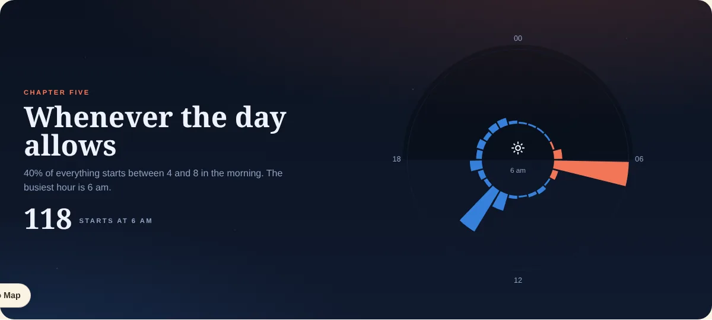
Also in the atlas: weekly tides, a medal case, milestones, a departures board and the full log. Each chapter animates once, on first view (useInView), then belongs to the reader: scrubbers, play/pause, filters. prefers-reduced-motion skips straight to the end state.
Press the video. That's the map drawing itself.
Atlas mode is the story version. It opens on an odometer rolling up the kilometres, then paints every route on a dark map as light, oldest first. Then a spiral with one turn per year, a race against your own past best efforts, a dial of the hours you start at, weekly tides, a medal case and a departures board. Every chapter plays once when you first reach it, then hands the controls to the reader. Readers who ask for less motion get the finished picture straight away.
11 Classic mode · the reference
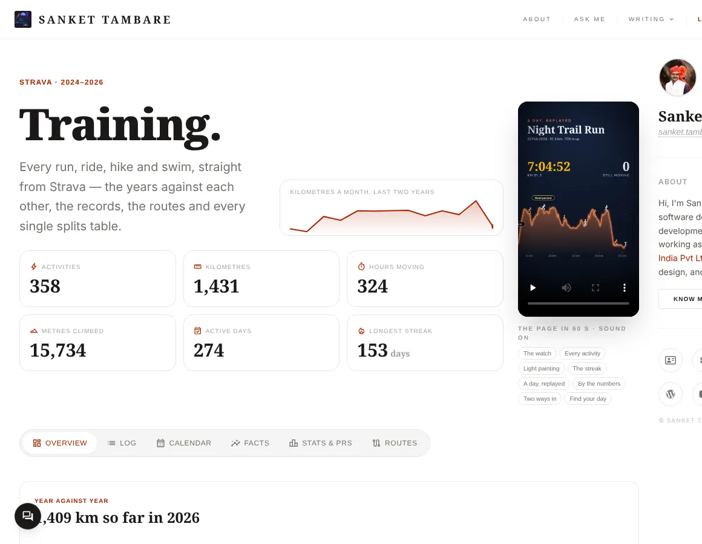
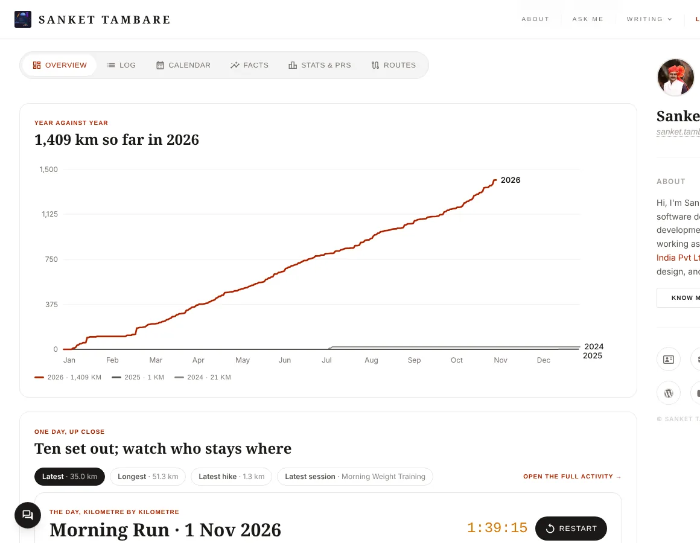
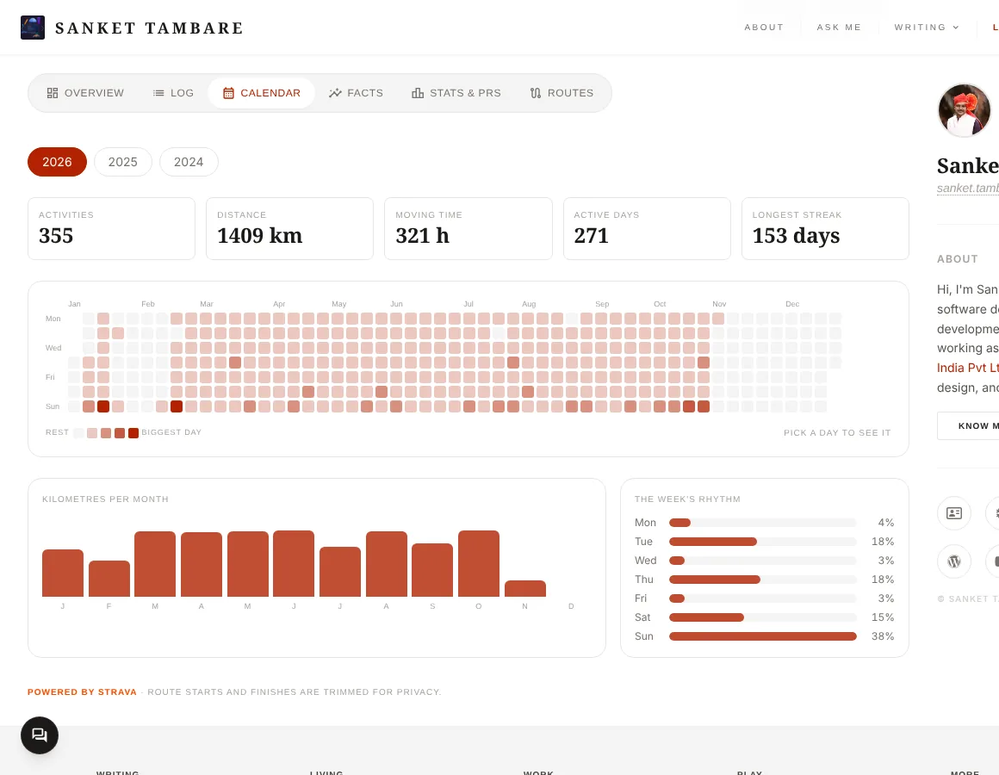
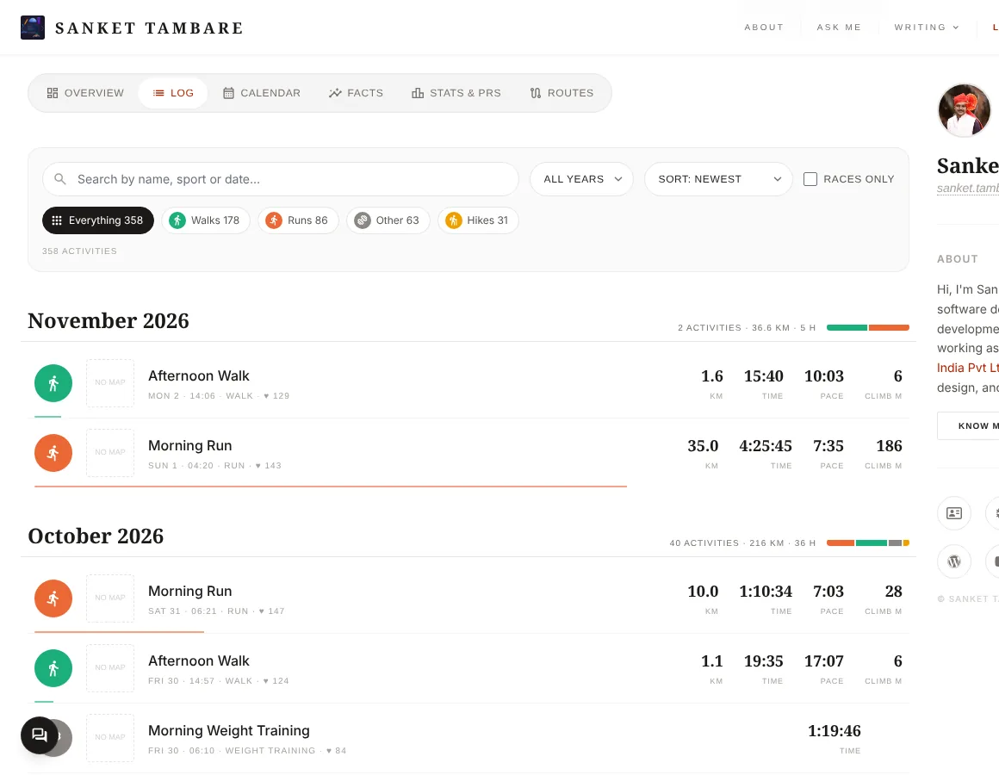
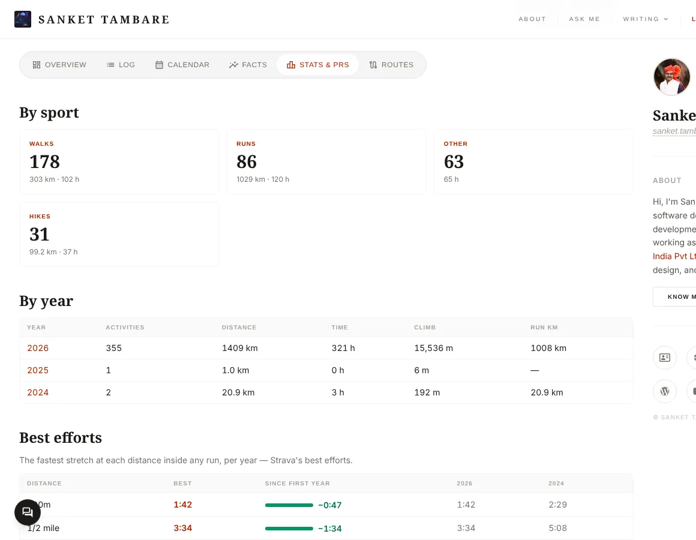
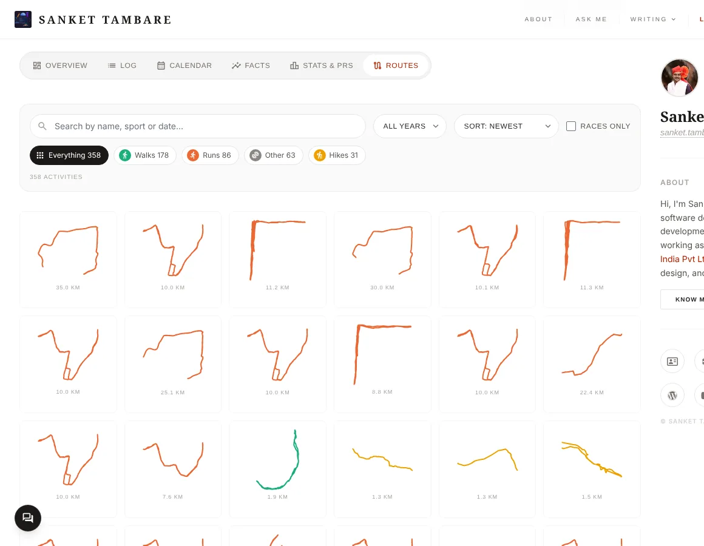
Tabs are URL state (?tab=, never ?view=, which belongs to the shell), so every view is a link you can share.
Same numbers as the atlas. Different job.
Classic mode is for the reader who came to look something up. Six tabs: an overview with a year-against-year race line, a searchable log, a calendar where every day can be clicked, the facts, stats and personal records, and a grid of routes. The tab lives in the URL, so any view can be shared. The two layouts never compute a number differently, because both read one data hook.
12 Real data 08:51 · 9f812ee · +600
activities.csv. Just activities/<id>.fit.gz and three .gpx. The importer learned a files-only mode: the FIT session record becomes the summary (activityFromFit), names default the way Strava names them ("Morning Run").walks
runs
strength
hikes
Real data never matches the docs. Plan for that.
At eight fifty-one the real export arrived, and it didn't match the documentation: no activities CSV at all, just the FIT files and three GPX files. So the importer gained a files-only mode, reading the summary from each FIT session and naming activities the way Strava would. You added the database key as a secret, and the first run wrote three hundred and fifty-eight activities: a hundred and seventy-eight walks, eighty-six runs, sixty-two strength sessions and thirty-one hikes. Every run since has found nothing new to add.
13 The gap
Profiling all 355 FIT files found about 50 recorded variables and 1,155,167 per-second records: heart rate, speed, cadence, altitude, power, step length, ground contact, vertical oscillation, COROS Effort Pace, temperature per lap, and strength sets with reps.
The first design used the summary columns. Everything per-second was being parsed, used for splits, and thrown away.
Device: a COROS PACE 3. Parsing needed {force:true, speedUnit:"m/s", lengthUnit:"m", elapsedRecordField:true, mode:"list"}, or speeds came back in km/h and records nested by lap.
The interesting part was in the 1.16 million rows we weren't using.
Once real data was in, the gap was obvious. The page used a dozen summary fields, but the files held about fifty variables across more than a million per-second records: heart rate, cadence, power, stride length, ground contact, even the sets and reps of strength sessions. The first pass parsed all of that to work out the splits, and then threw it away. The next two prompts were about using it.
14 The reference 09:08 · 4fc9009 · +762
The reference was a subscriber-growth chart with little hikers climbing its line. The idea it gave: an activity is a walk along its terrain. Draw the day's elevation as a line, and put people on it at the moments that mattered.
storyOf(splits) turns per-km splits into points and beats: start, fastest km, longest stop, biggest climb, heart-rate peak, finish.poseFor() picks the stride from that km's pace against the day's median: walk, run, fast, hike, climb, rest by a campfire, summit with a flag.fitBeats() keeps only the figures that fit at the real pixel width.A good reference image beats a paragraph of adjectives.
At eight minutes past nine you shared a reference: a growth chart with tiny hikers climbing its line. The idea it unlocked was simple. An activity is a walk along its own terrain. So each day became its elevation drawn as a line, with figures standing at the moments that mattered: the start, the fastest kilometre, the longest stop, the biggest climb, the heart-rate peak, and the finish. Each figure's stride comes from that kilometre's pace, and a long stop sits them down by a campfire.
15 Ten set out 09:16 · f908c4b · 21 files · +945
positionAt(points, t) maps the activity's own clock to a place on the line; stops hold the group still.pickSlots(): the moments first, then the remaining figures placed one at a time as far as possible from every taken spot, so they end up spread out.terrainOf() draws hills from the altitude stream (240 samples), not one net change per km.profile jsonb (0040, which you ran on prod at 09:26) carries the thinned streams, never a position.That's us. The drawing above runs the page's own rule.
Eight minutes later came the prompt that gave this deck its name. Animate the figures. Let them rise with the line as it draws. Start with a group of ten, have a few stay along the way, and at the end have them spread out. The drawing on this slide follows the page's rule: the terrain draws itself on the activity's own clock, the group walks at its tip, and one figure stays at each moment. Once the moments are covered, each remaining figure goes wherever is furthest from the others, so the ten finish spread across the whole ridge. The same prompt asked that the whole file be used, so a new column, profile, now carries the per-second streams, with no positions in it.
16 Use everything
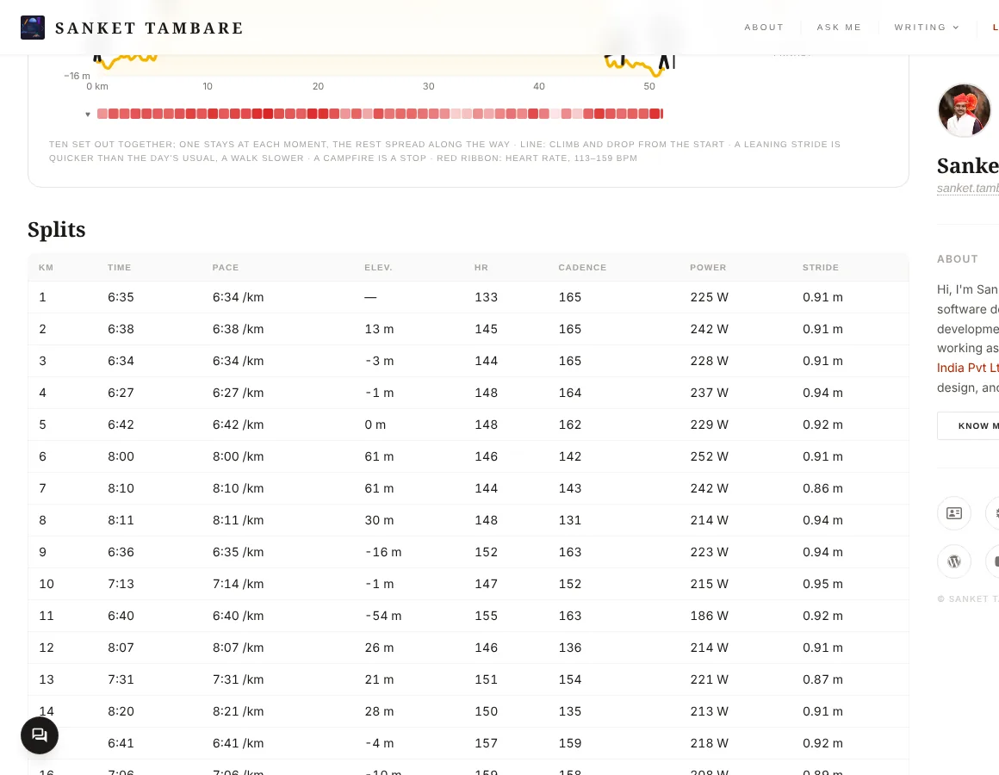
1.16 M records become ~240 samples per activity: HR, speed, cadence, altitude, power, step, contact, bounce. Enough for a curve, light enough for the page.
Strength and yoga get SessionStory: heart rate over time plus the set blocks, instead of an empty terrain.
DayPicker puts the story in the Overview and the atlas, with chips for the latest, the longest, the latest hike and the latest session, and under any calendar day.
Even the gym sessions got a story.
"Make sure you have used everything" meant going back through the file. Each activity's per-second streams are thinned to about two hundred and forty samples, which is plenty for a smooth curve and light enough to load. The splits table grew columns for cadence, power, stride, ground contact and bounce. Strength and yoga sessions, which have no kilometres, got their own story: heart rate across the session with the sets marked on it. And the day story moved onto the main page, with quick picks for the latest, the longest, and any day on the calendar.
17 Facts 09:36 · 0e0f712 · +886
deepStatsOf() at import boils each activity's seconds down to ~10 numbers in extra._stats: HR in 10-bpm bins, drift on runs of 8 km+, negative split, peaks, steps. No new migration.VARIABLES lists every kept field with its source and its coverage ("cadence: 263 of 358").Zones are measured against the 98th percentile of maxima (182 bpm), not one 195 bpm spike. A 49 km/h GPS jump is not shown as "top speed". Wrist temperature reads high, and the page says so. Three 2024 GPX runs don't stretch "longest break" to 525 days.
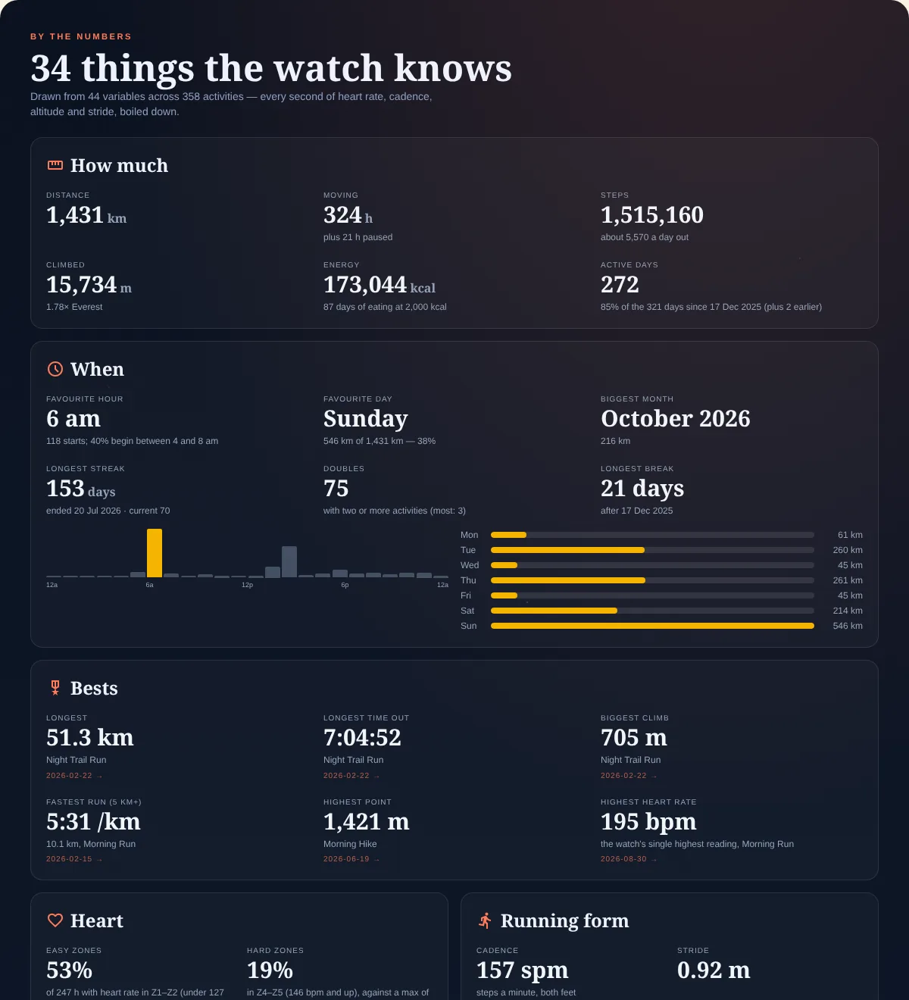
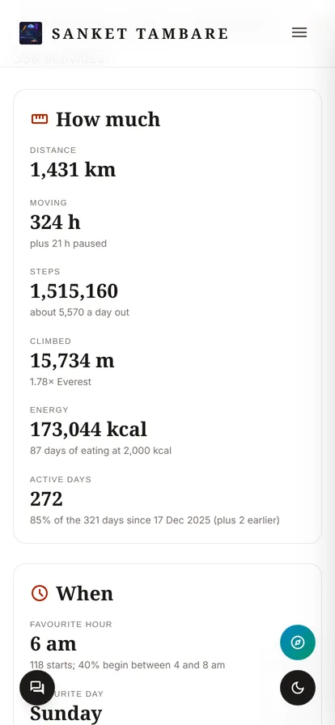
A fact you can't trust is worse than no fact.
The next prompt asked for everything: every variable, and every fact you could draw from it. The per-second facts, like time in heart-rate zones, heart-rate drift on long runs and total steps, are computed once at import and stored as a few numbers per activity, so the page never loads the streams. The result is forty-four variables, each with how many activities record it, and thirty-four facts. Just as important was what got left out. One heart-rate spike of a hundred and ninety-five isn't treated as the true maximum, and a GPS glitch at forty-nine kilometres an hour isn't presented as a top speed.
18 Learnings
pathLength plus a non-scaling stroke dashes in screen space, so the "100%" dash was too short once scaled.fix: measure the dash in JS at real pixelsEvery one of these was caught on a screenshot, not in review.
Some things broke along the way, and each had a one-line cause. The hike page crashed because an animation timestamp can come before the start time, so time went negative. Routes drew in with gaps because of how dashed strokes scale. The night map was too small because a few distant treks set the frame. Hikers sat by campfires on almost every kilometre. On a wide screen, all ten figures bunched up at the start. Every one of these turned up in a screenshot taken after a change, which is why each change ended with one.
19 The film 12:13 · 20fae90 · 31 files · +2,548
data.mjs reads the public table through the page's own modules (Vite SSR).en_GB-cori-high, then measured.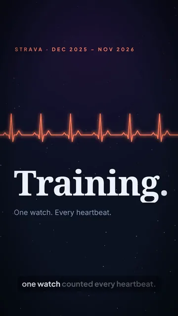
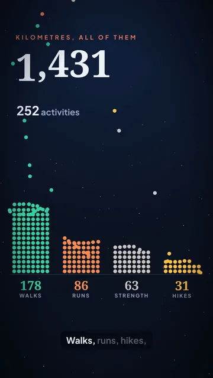
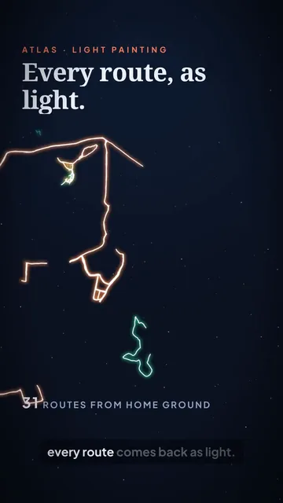
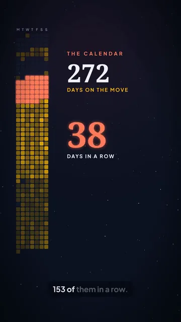
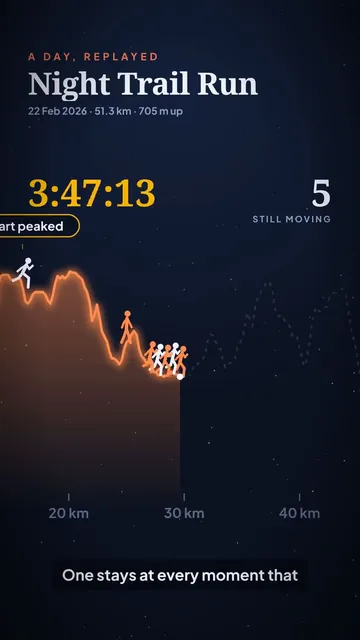
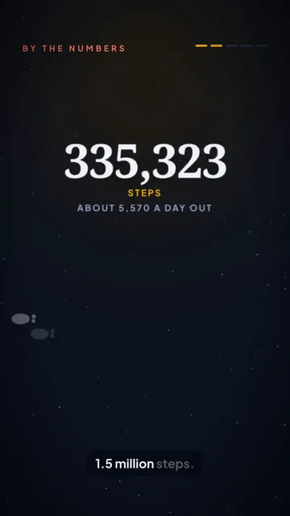
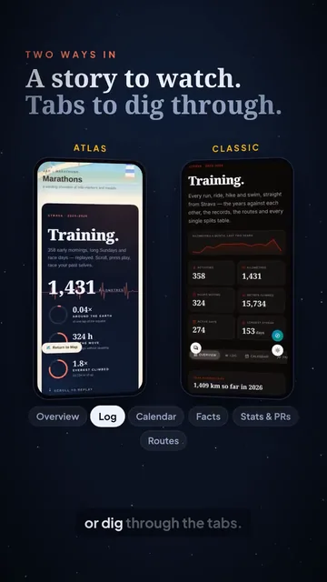
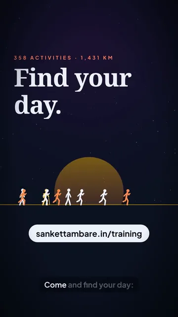
We're in it too, at 0:31.
Just after noon came the film: sixty seconds, vertical, made with Remotion, and placed on the page. The pipeline has four steps. The data step reads the public table through the page's own code, so the film can never disagree with the page. Each scene's line is spoken and measured first. A synthesised score is cut to the scene boundaries. Then Remotion renders every frame from the frame number, never from a clock. The eight scenes go from a heartbeat to an invitation, with the group of ten at thirty-one seconds.
20 Film learnings
Each line is spoken first and measured; each scene is its line plus padding; spare time is shared out by weight. The film locks at exactly 60.0 s, and a line is sped up (≤1.2×) only if it has to be.
Piper read "1,431" digit group by digit group and dragged. The script now says "fourteen hundred and thirty-one", while the captions still show the figures.
The five fact cards ran ahead of the voice. Now each lands when its sentence starts (timed by its share of the letters), stays at least 1.2 s, and the music hits on the same frame.
A page ends at a sentence, at 6 words, or at a comma once it has 3. Breaking at every comma left one-word captions like "hikes,".
Remotion renders frames out of order. A figure's stride, a flame's flicker and a camera push are all functions of the frame number.
A 720×1280 web copy at 3.4 MB, preload="none", chapter chips that jump to each scene, and a test that fails the build above 6 MB.
Remotion is free for individuals; a company of more than three people needs its company licence. That's noted in docs/strava.md.
Every one of these came from looking at stills.
The film taught its own lessons. The narration sets the clock: every line is spoken first, and each scene is sized around its line, so the film lands on exactly sixty seconds. Numbers are spoken as words, because the voice stumbled over digits. The fact cards wait for their sentences instead of racing ahead of them. Captions break at sentence ends, not at every comma. And in Remotion, everything moves by frame number. On the page, the film costs nothing until someone presses play.
21 Shipping
0038, 0039 and 0040 on production as each landed. Code reads new columns only once they exist (the importer probes for profile).npm run strava:import -- --dir=tmp/strava-export npm run og:fallbacks -- --only=training npm run ask:index npm run training:film -- --publish
Schema on prod first, code after: nothing reads a column that isn't there.
Shipping followed one routine. Before every push: eight hundred and sixteen tests, the linter, a full build, and screenshots at desktop and phone size with no console errors. The database always moved first. You ran each migration on production as soon as it landed, and the code was written so it never reads a column before that column exists. Every push deploys a preview of the branch, which is live now with real data and the film. Production follows when pull request sixty-nine is merged. After each new Strava export, four commands bring everything up to date.
22 This deck 13:06
git log.The last prompt asked for this deck, built from the whole process, up to and including making it. Your prompts and answers were taken word for word from the session log, the commits from git, and the screens and recordings were captured from the live preview. The stick figures are drawn from the same joint table the page uses, and the narration you're hearing is the film's voice. If you want to reuse the approach, it fits in six lines. Ask before you build. Design on labelled sample data. Let the real data redesign it. Show a reference image instead of describing one. Screenshot every change. And put tests on the things that are easiest to lose. Ten set out together this morning, and now they're spread along the whole ridge.
Narration · slide 1